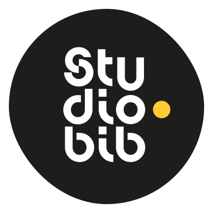

<div style="text-align: left"> # MUL2119 ## Les bibliothèques UdeM  <br> [studio.bib.umontreal.ca/formations/MUL2119](https://studio.bib.umontreal.ca/formations/MUL2119) Licence : CC-BY 4.0 </div>
Vos bibliothécaires
Christiane Melançon
christiane.melancon@umontreal.ca
Guide sur les musiques de film
Valérie Rioux
valerie.rioux@umontreal.ca
Guide cinéma
## Les studios des bibliothèques Audio et vidéo → BLSH Audio → Mathématiques et informatique Audio → Hubert-Reeves (Campus MIL) [studio.bib.umontreal.ca/espaces](https://studio.bib.umontreal.ca/espaces)
## La post-production ### Montage - [Postes d'édition](https://studio.bib.umontreal.ca/medias/postes-edition/) – Adobe + DaVinci Resolve - [Audacity](https://studio.bib.umontreal.ca/medias/audacity/) ### Capture / récupération - [OBS](https://studio.bib.umontreal.ca/medias/obs/) - [YouTube to WAV](https://en.youtubetowav.net/)
## Formats recommandés ### Son - WAV = enregistrement/montage - MP3 = diffusion ### Vidéo - MP4 = enregistrement/montage/diffusion
## Musiques et effets [Banques sonores libres](https://studio.bib.umontreal.ca/medias/audacity/#ajouter-des-pistes-musique-effets-sonores) À intégrer avec parcimonie : musique, bruitages, ambiances
## Équipements - Micro Blue Yeti (USB) - Zoom H6 (enregistrement mobile) [Lien de réservation](https://umontreal.on.worldcat.org/oclc/1346988068)
## Enregistrer avec son téléphone - Utiliser un micro externe si possible - S’enregistrer dans un lieu calme - [Améliorer le son avec l’IA](https://podcast.adobe.com/fr/enhance)
## Pourquoi un balado? - Format accessible et engageant - La voix comme vecteur d’émotion - Narration, sons et musique pour enrichir le récit - Complément idéal à l’analyse écrite
## Réussir son enregistrement - Préparer un plan clair - Enregistrer plus, garder l’essentiel - Soigner la voix et les silences - L’important : clarté, cohérence et créativité
## Guide droit d'auteur [Guide droit d'auteur - Création et médias](https://boite-outils.bib.umontreal.ca/c.php?g=740213&p=5341650)
## On est là pour vous ! - [Formations pratiques](https://calendrier.bib.umontreal.ca/calendar?t=d&q=balado&cid=7690&cal=7690&inc=0) - [Consultations personnalisées](https://outlook.office.com/book/studiobib@umontreal.ca/?ismsaljsauthenabled) - ✉️ studio@bib.umontreal.ca
## Des questions?